S'il est fait réponse à chaque mail reçu par l'élevage, un retard entraîne actuellement des réponses tardives. Avec toutes les excuses de l'élevage.
Concernant les demandes d'information en vue d'adoption, utiliser la page Contact. Un retour est fait lorsqu'il y a des chatons de disponibles. La priorité pour les réservations est donnée aux personnes connues : propriétaires ayant déjà adopté un Korat ou proches.
Naissance
Naissance d'une grande portée de chatons Korat.
Félicitations aux courageux parents qui se portent fort bien.
Ci-dessous des chatons nouvellement nés.
Voici ci-dessous deux nouvelles
une bonne de Ioda qui a rencontré Interpol, et une tragique de Tao. Elles sont placées ici suite à un souci temporaire d'accès, les autres nouvelles sont sur les espaces respectifs des portées.
Merci aux propriétaires pour ces retours en images.
Des nouvelles de Ioda
Amour Korat's Ioda : Korat BluePoint

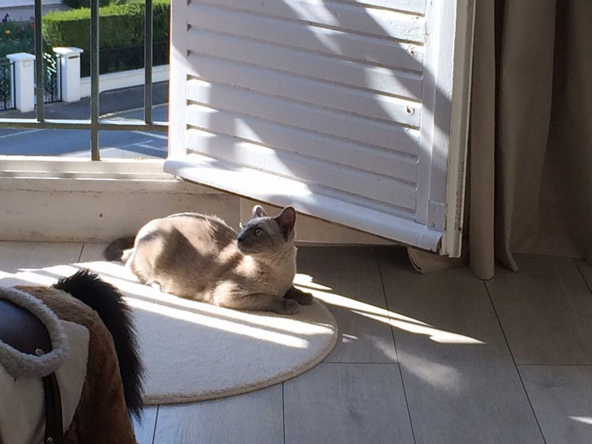
Avec les enfants
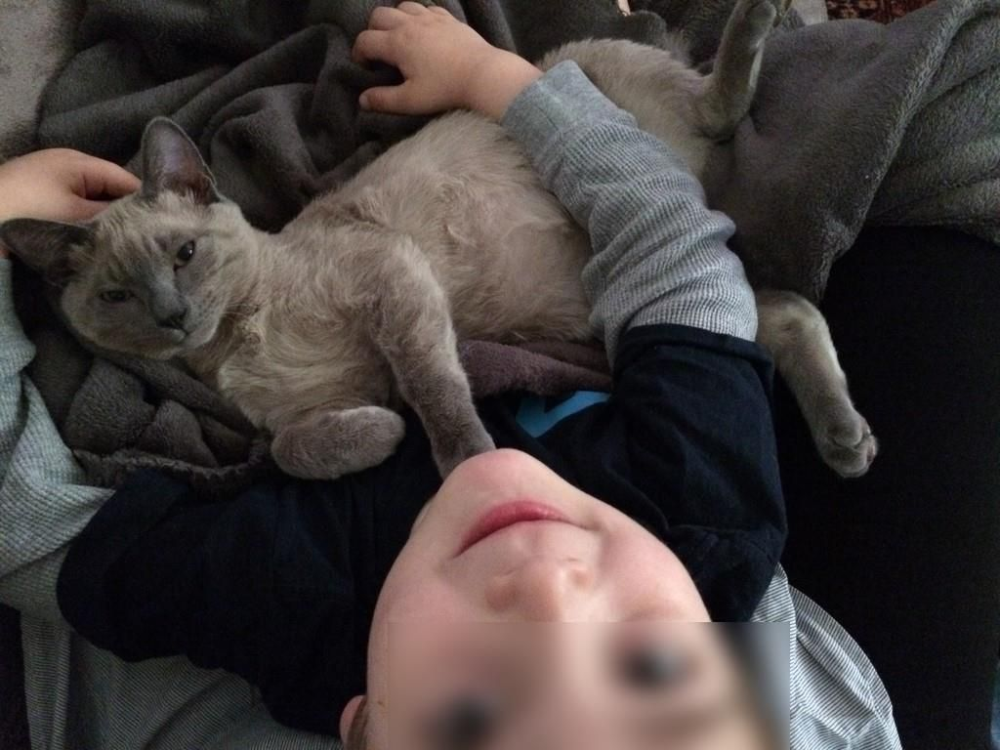
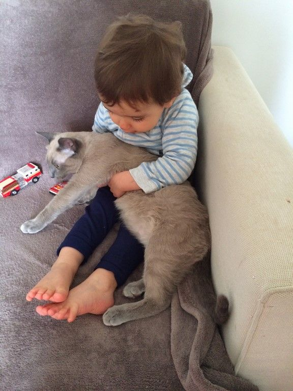
Première bêtise
Ioda a fait sa première et unique (pour l'instant) "bêtise" ! ce qui est étonnant pour un jeune chat…
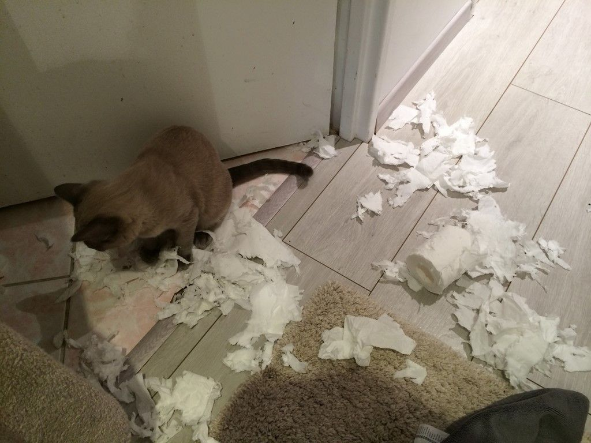
Dans le train
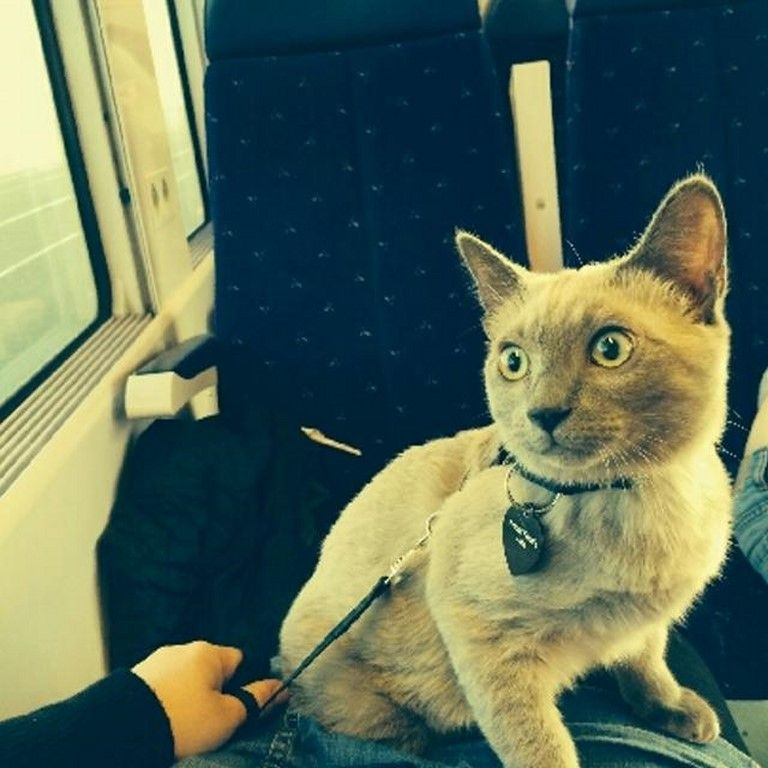
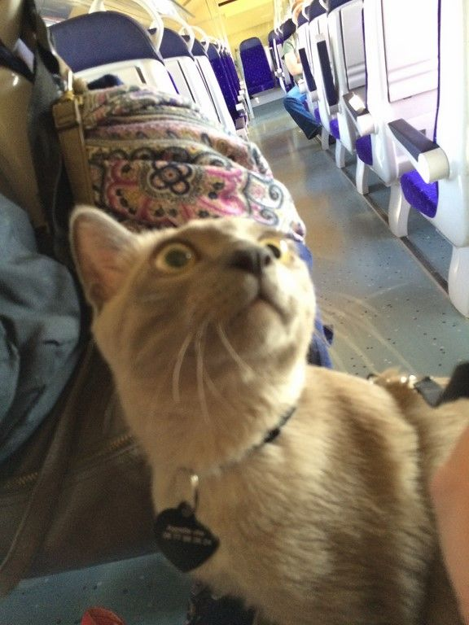
Rencontre avec son cousin Amour Korat's Interpol
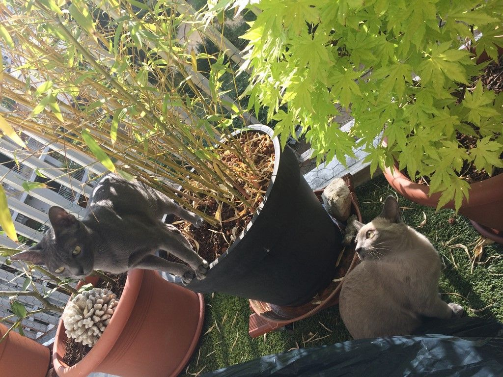
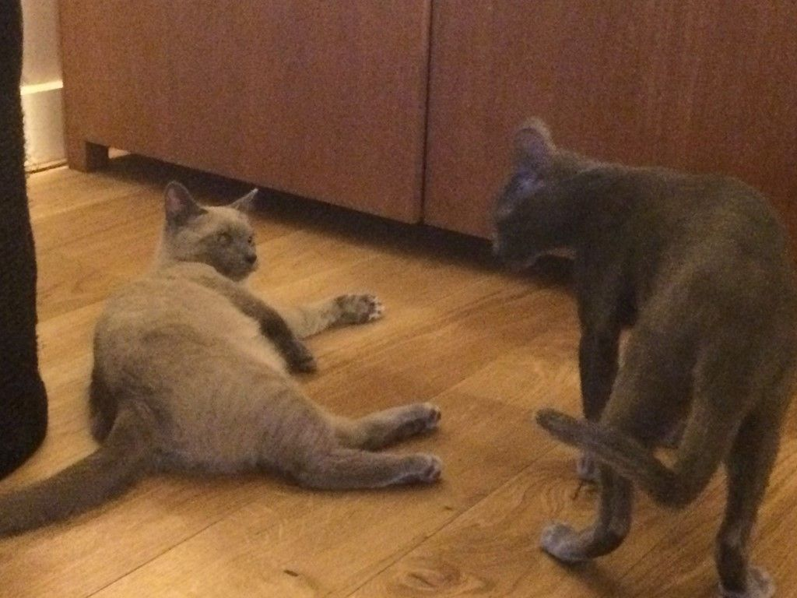
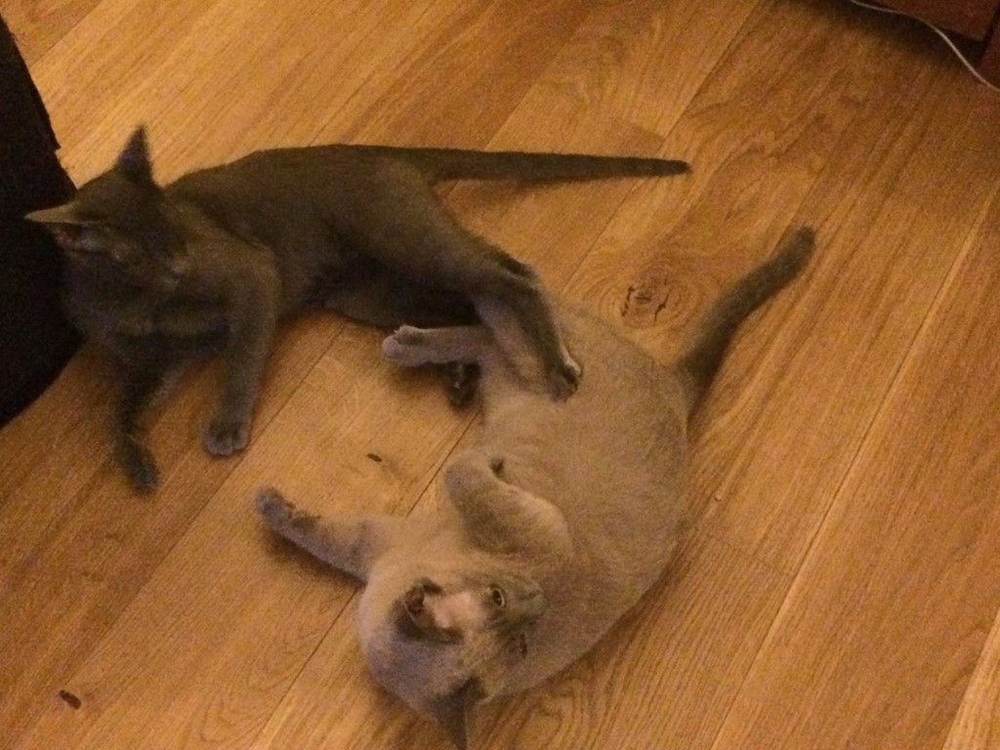
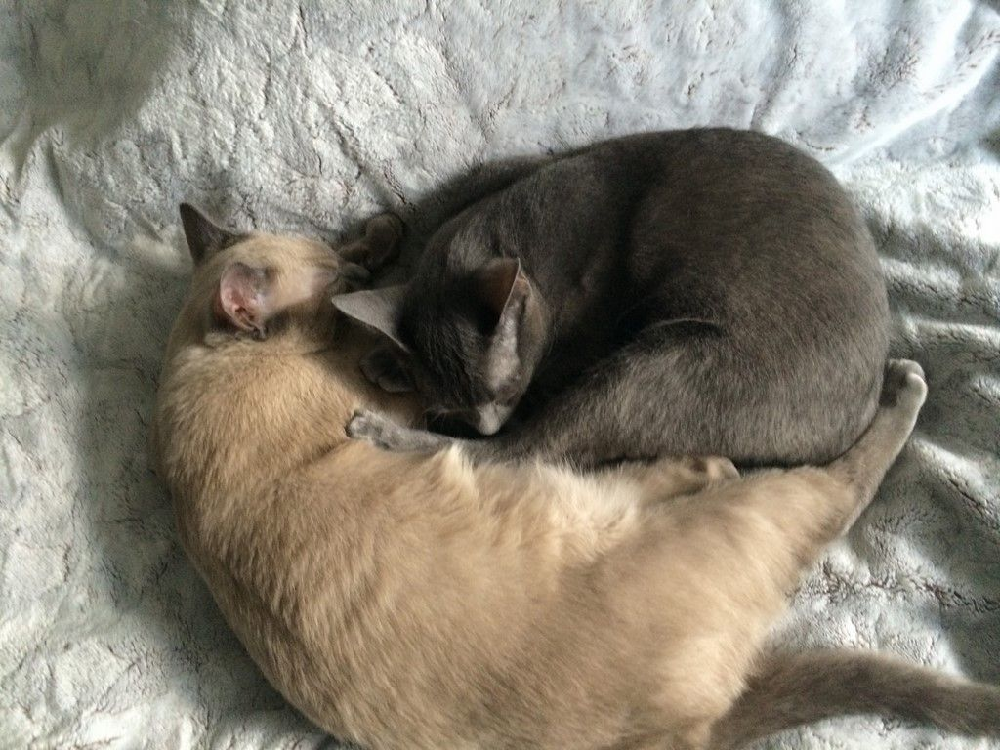


Adieu Tao
Tragique accident d'Amour Korat's i-Tao.
Il est toujours très douloureux de recevoir une bien triste nouvelle. Et cette douleur n'est rien comparée à celle des propriétaires…
Quelques mots reçus, inutile d'en rajouter :
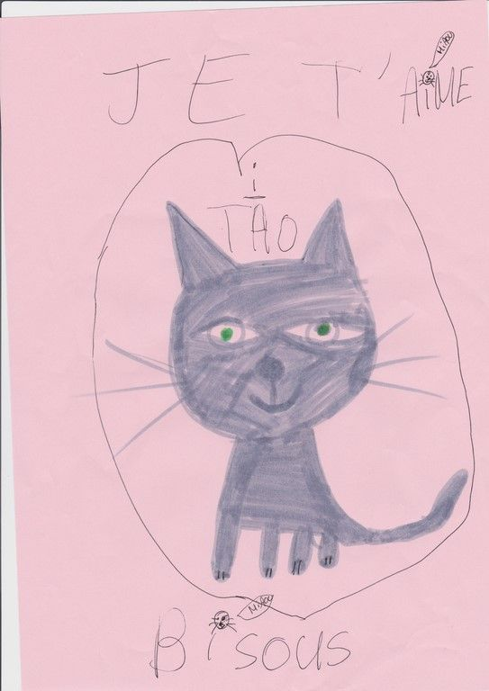
"C'est avec énormément de peine que nous vous annonçons le décès de Tao notre amour de Korat.
Il était le ciment de notre famille recomposée, notre bonheur à tous, le chat adoré de chacun d'entre nous.
Sa place au sein de la famille était très importante, aussi court fut son passage.
Il a malheureusement été percuté par la voiture de notre voisine hier midi alors que nous n'étions pas à la maison…"


"Voici quelques photos de notre petit ange gris que nous avons enterré hier avec les enfants.
Des photos de lui qui dort, dans des positions toujours incroyables, une dans son jardin où il régnait en maître, le dessin de ma fille lui faisant ses adieux et l'endroit où il repose depuis hier, près de nous.
Il n'aura vécu que 10 mois mais aura fait le bonheur de toute la famille. C'était un excellent chasseur, en 6 mois il nous a ramené 2 gros rats, 6 ou 7 souris, un pigeon, quelques oiseaux et des centaines d'insectes. Un record !"
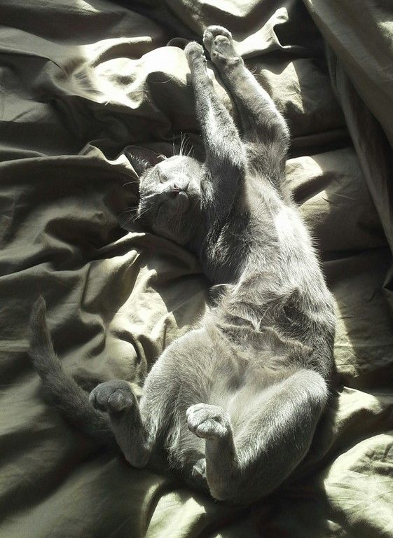
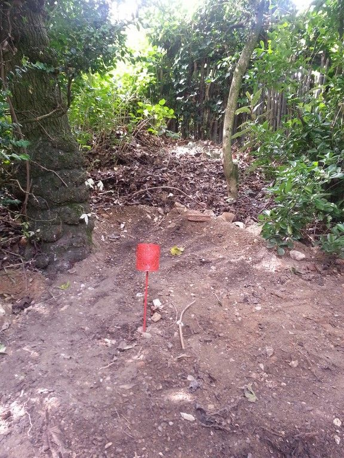